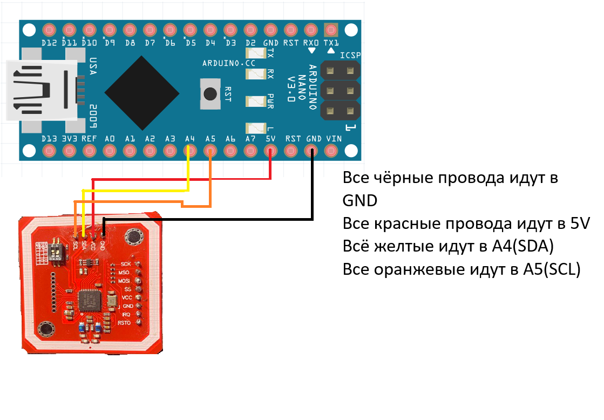
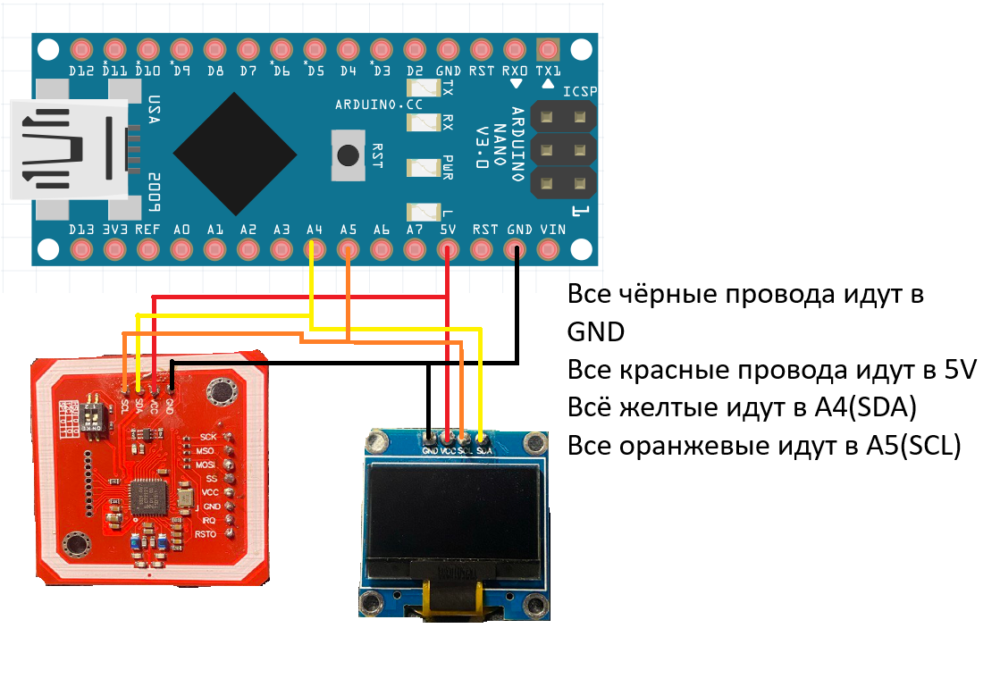
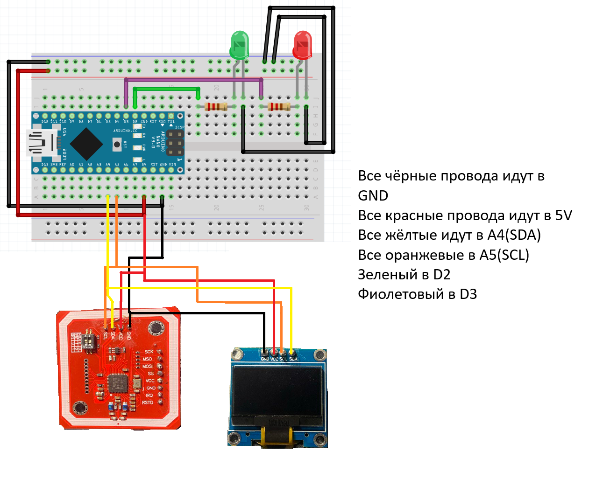

Неболшой гайдик по pn532(Модуль RFID)
Как его завести на ардуино
Для тестировки соберём простейшую схему на ардуино нано
Эта схема работает так: Прикладываем карточку или метку к модулю pn532 и он считывает её после чего выводит в serial monitor информацию о карте\метке
Для более удобной отладки можно добавить OLED экран делается это вот так:
Тут уже всё выводится на дисплей и находится на нём на протяжении 1 секунды
Можно сделать например когда вы прикладываете верную карту на oled дисплей выводится надпись OK, соберём схему:
Ещё к этой схеме можно добавить 2 светодиода которые тоже будут говорить о том верная карта или нет схема:
резисторы у меня стоят на 2.2 кОМ
На этом всё! надеюсь я вам помог.
Удачных проектов! Если остались вопросы пишите в сообщения телеграм канала или в дс сервер по кнопкам ниже: